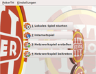
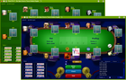
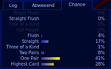

PokerTH
Dieser Artikel wurde für die folgenden Ubuntu-Versionen getestet:
Ubuntu 14.04 Trusty Tahr
Zum Verständnis dieses Artikels sind folgende Seiten hilfreich:
PokerTH  ist ein Pokerspiel der Variante Texas Hold’em. Das unter der GPL lizenzierte Open-Source-Projekt unterstützt das Spielen gegen bis zu neun Computergegner durch eine künstliche Intelligenz in der Gegner-Engine, ebenso wie das Spielen und Chatten mit Spielern über das Internet oder LAN. PokerTH ist das einzige vergleichbare Texas-Hold’em-Programm im Open-Source-Bereich, das mit solch einer Engine ausgestattet ist.
ist ein Pokerspiel der Variante Texas Hold’em. Das unter der GPL lizenzierte Open-Source-Projekt unterstützt das Spielen gegen bis zu neun Computergegner durch eine künstliche Intelligenz in der Gegner-Engine, ebenso wie das Spielen und Chatten mit Spielern über das Internet oder LAN. PokerTH ist das einzige vergleichbare Texas-Hold’em-Programm im Open-Source-Bereich, das mit solch einer Engine ausgestattet ist.
|  |  |  |
| Auswahl | Tische | Chancen |
PokerTH verfügt über folgende Merkmale:
(lokales) Spiel gegen bis zu 9 (Computer-)Gegner
Spiel gegen menschliche Spieler im Internet
Spiel gegen menschliche Spieler im Netzwerk (LAN)
deutsche Oberläche (neben engl., franz., span., portug., türk. und vielen mehr)
Chancenberechnung des eigenen Blattes
Chat
Einstellungen zu Startgeld und Blinds
Installation¶
PokerTH ist in den Paketquellen von Ubuntu enthalten [1]:
pokerth
 mit apturl
mit apturl
Paketliste zum Kopieren:
sudo apt-get install pokerth
sudo aptitude install pokerth
Unter Umständen ist die Version in den Ubuntu-Quellen veraltet und für Internetspiele nicht geeignet. In diesem Fall kann man die aktuelle Version aus folgendem PPA installieren [2].
Adresszeile zum Hinzufügen des PPAs:
ppa:pkg-games/ppa
Hinweis!
Zusätzliche Fremdquellen können das System gefährden.
Ein PPA unterstützt nicht zwangsläufig alle Ubuntu-Versionen. Weitere Informationen sind der  PPA-Beschreibung des Eigentümers/Teams pkg-games zu entnehmen.
PPA-Beschreibung des Eigentümers/Teams pkg-games zu entnehmen.
Damit Pakete aus dem PPA genutzt werden können, müssen die Paketquellen neu eingelesen werden.
Nach der Installation findet man PokerTH unter "Anwendungen → Spiele → PokerTH".
Um selbst ein Netzwerkspiel, dem weitere Personen beitreten können, erstellen zu können, muss zusätzlich das folgende Paket installiert werden:
pokerth-server
mit apturl
Paketliste zum Kopieren:
sudo apt-get install pokerth-server
sudo aptitude install pokerth-server
Bedienung¶
Zu Beginn der Runde erhält man zwei Karten und hat, sobald man an der Reihe ist, folgende Möglichkeiten:
aufhören / aussteigen (Fold)
ohne Einsatz mitgehen (Check)
einen Einsatz mitgehen (Call)
den Einsatz erhöhen (Raise)
mit seinem gesamten Guthaben erhöhen (All-in)
Grundsätzlich lassen sich für das eigene (lokale) und das selbst erstellte Netzwerkspiel die Anzahl der Mitspieler, die Höhe der blinden Einsätze (Blinds), die Art der Blindserhöhung (runden- oder zeitbasiert), das Startkapital, die Spielgeschwindigkeit der Computergegner und das Limit für die Spieleraktion menschlicher Mitspieler festlegen.
Ist die linke Toolbar aktiviert zeigt sie entweder die möglichen Kombinationen in der Reihenfolge ihrer Wertigkeiten oder den Chat. Die rechte Toolbar zeigt entweder das Log, eine Einstellmöglichkeit für automatisiertes Setzen, oder die Chancenberechnung des eigenen aktuellen Blattes.
Auf pokerth.net findet man neben einem Forum auch viele verschiedene Designs für Spieltische und Karten, die sich einfach in den Einstellungen verwenden und wechseln lassen.
Probleme¶
Bei alten Versionen kann es vorkommen, dass keine Verbindung zum Internet-Server hergestellt werden kann. In diesem Fall wird eine aktuelle Version aus Fremdquellen benötigt (siehe Abschnitt Installation).

- Erstellt mit Inyoka
-
 2004 – 2017 ubuntuusers.de • Einige Rechte vorbehalten
2004 – 2017 ubuntuusers.de • Einige Rechte vorbehalten
Lizenz • Kontakt • Datenschutz • Impressum • Serverstatus -
Serverhousing gespendet von